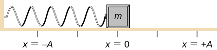
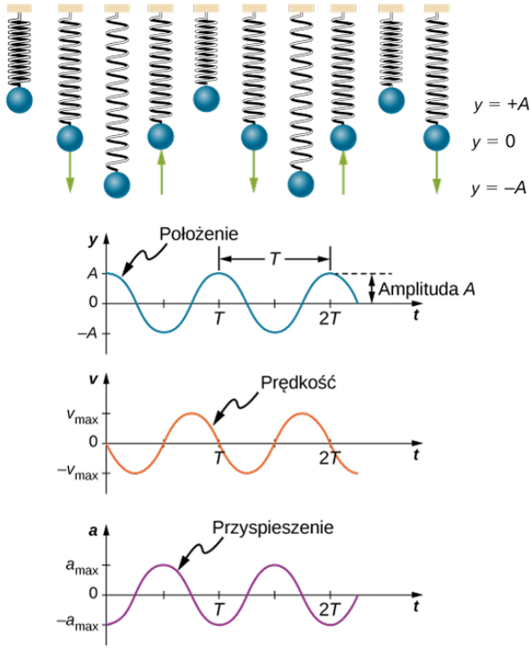
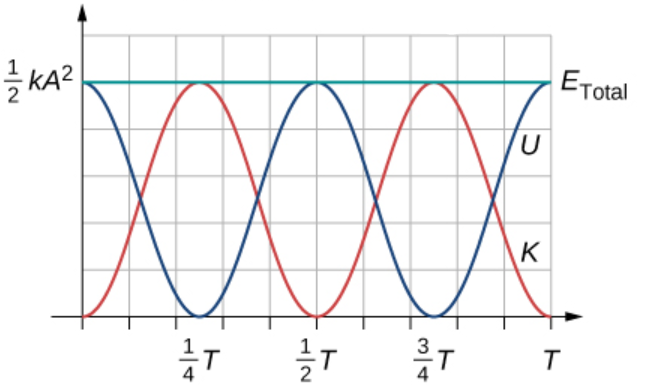

Ruch Harmoniczny
Ruch harmoniczny to szczególny przypadek ruchu drgającego, który można opisać jako powtarzalny i okresowy ruch wokół położenia równowagi. Występuje on wtedy, gdy siła przywracająca działająca na ciało jest proporcjonalna do wychylenia tego ciała z położenia równowagi i skierowana w stronę tego położenia. Takie zjawiska są powszechne zarówno w przyrodzie, jak i w systemach technicznych, np. w oscylacjach mas na sprężynach, ruchu wahadła czy drganiach cząsteczek w chemii kwantowej.
Okres i częstotliwość drgań
Okresem (T) w ruchu periodycznym nazywamy czas wykonania jednego pełnego drgania. Zwykle wyrażany jest w sekundach, ale może być podawany w innych jednostkach czasu (np. minutach, godzinach).
Częstotliwość (f) to liczba drgań na jednostkę czasu. Zależność między okresem a częstotliwością wyraża wzór:
f = 1 / T
Jednostką częstotliwości w układzie SI jest herc (Hz), który oznacza jeden cykl na sekundę:
1 Hz = 1 cykl / sekunda = 1 s-1
Cykl oznacza jedno pełne drgnienie.
Opis Matematyczny Ruchu Harmonicznego
Ruch harmoniczny opisuje drgania wokół położenia równowagi, w których ciało powraca do punktu równowagi pod wpływem siły proporcjonalnej do wychylenia, działającej w przeciwnym kierunku. W takim ruchu położenie ciała w dowolnym momencie czasu można opisać za pomocą funkcji harmonicznej, takiej jak cosinus lub sinus. Dla sytuacji, w której ciało startuje z maksymalnego wychylenia, równanie przyjmuje postać: x(t) = A cos(ωt + φ).
To równanie wyjaśnia zależność położenia ciała x(t) od czasu t, amplitudy A, częstości kątowej ω, oraz fazy początkowej φ. Kluczowe elementy równania są następujące:
- A: Amplituda, określa maksymalne wychylenie od położenia równowagi, czyli najdalszy punkt, jaki osiąga ciało.
- ω: Częstość kołowa, wyrażona wzorem ω = 2π / T, gdzie T to okres drgań. Oznacza szybkość zmian fazy drgań w jednostkach radianów na sekundę.
- φ: Faza początkowa, uwzględnia stan początkowy układu w chwili t = 0. Określa, w której części cyklu ruchu ciało zaczyna się poruszać.
Funkcja cosinus w równaniu x(t) opisuje periodyczne zmiany położenia ciała. Dzięki temu możemy dokładnie przewidzieć, gdzie znajdzie się ciało w każdej chwili czasu. Kiedy t = 0, funkcja x(0) = A cos(φ), co oznacza, że położenie początkowe zależy od amplitudy i fazy początkowej. Ruch ciała jest cykliczny, a wartości położenia powtarzają się co okres T, czyli co pełen cykl drgań.
Równanie to uwzględnia także zależność między ruchem harmonicznym a funkcją cosinus, której wartości wahają się od -1 do +1. Mnożenie przez amplitudę A pozwala przeskalować te wartości, dzięki czemu opisują rzeczywiste wychylenia w jednostkach długości (np. w metrach lub centymetrach). Na przykład, kiedy funkcja cos osiąga maksimum (1), położenie ciała wynosi x = +A, czyli jest ono maksymalnie wychylone w dodatnią stronę. Kiedy cos osiąga minimum (-1), ciało znajduje się w położeniu x = -A, czyli maksymalnie wychylone w stronę przeciwną.
Formuły na prędkość v(t) i przyspieszenie a(t) wynikają z pochodnych funkcji położenia x(t) względem czasu. Prędkość jest pierwszą pochodną x(t): v(t) = dx/dt = -Aω sin(ωt + φ). Wynika to z faktu, że pochodna cosinusa to minus sinus. Przyspieszenie, z kolei, jest pochodną prędkości względem czasu, czyli drugą pochodną x(t): a(t) = dv/dt = -Aω² cos(ωt + φ). To oznacza, że przyspieszenie w ruchu harmonicznym również zmienia się sinusoidalnie i jest proporcjonalne do położenia, ale ma przeciwny znak.
Podsumowanie Wzorów:
- Położenie: x(t) = A cos(ωt + φ)
- Prędkość: v(t) = -Aω sin(ωt + φ), gdzie vmax = Aω
- Przyspieszenie: a(t) = -Aω² cos(ωt + φ), gdzie amax = Aω²
Te wzory ukazują, że ruch harmoniczny jest definiowany przez ściśle określone zależności czasowe, które umożliwiają precyzyjne opisanie zmian położenia, prędkości i przyspieszenia w czasie. Wynikają one bezpośrednio z matematycznych właściwości funkcji trygonometrycznych i ich pochodnych.
Drgania masy na sprężynie
W przypadku ruchu harmonicznego masy na sprężynie, drgania opisuje równanie harmoniczne, które wynika z prawa Hooke’a. Siła sprężystości działająca na masę jest proporcjonalna do wychylenia i można ją zapisać jako F = -kx, gdzie:
- k: Stała sprężystości, która określa, jak „sztywna” jest sprężyna.
- x: Wychylenie od położenia równowagi.
Siła ta odpowiada za ruch harmoniczny masy i powoduje, że ciało oscyluje wokół punktu równowagi. Przy założeniu, że w układzie nie występuje tarcie ani inne siły zewnętrzne, równania ruchu harmonicznego można opisać w formie: x(t) = A cos(ωt + φ), gdzie ω = √(k/m). Częstość kołowa ω zależy od stosunku stałej sprężystości do masy, co oznacza, że im większa jest sztywność sprężyny (k), tym szybsze są drgania.
Przy wspomnianych założeniach, prędkość oraz przyśpieszenie w czasie, można opisać wzorami z poprzedniego akapitu, przy czym stale zachodzi równość ω = √(k/m).
Energia
Energia oscylatora harmonicznego bedącego masą zawieszoną na sprężynie, dzieli się na dwa rodzaje: kinetyczną i potencjalną. W położeniu równowagi cała energia układu jest kinetyczna, a w skrajnych położeniach - potencjalna. Całkowita energia układu jest stała i wynosi:
E = 1/2 kA², gdzie:
- k: Stała sprężystości sprężyny, określająca jej sztywność.
- A: Amplituda, maksymalne wychylenie od położenia równowagi.
Energia potencjalna Ep(U) = 1/2 k x² zależy od wychylenia x i jest maksymalna, gdy ciało znajduje się w skrajnych położeniach (x = ±A). W tych punktach prędkość jest równa zero, a cała energia układu pochodzi od sprężyny.
Energia kinetyczna Ek(K) = 1/2 m v² zależy od masy ciała i jego prędkości. Osiąga maksimum, gdy ciało przechodzi przez położenie równowagi (x = 0), gdzie prędkość jest największa, a cała energia pochodzi od ruchu ciała.
Całkowita energia układu jest zachowana w czasie, co oznacza, że w każdej chwili suma energii kinetycznej i potencjalnej jest równa wartości E = 1/2 kA². To właśnie wymiana między tymi dwoma rodzajami energii jest charakterystyczna dla ruchu harmonicznego.
Realne Układy i Drgania Tłumione
W rzeczywistych systemach obserwuje się często drgania tłumione, w których amplituda ruchu zmniejsza się z czasem w wyniku utraty energii na skutek tarcia lub oporu środowiska.
Matematycznie opisuje się to za pomocą równania:
x(t) = A0 e-bt cos(ωdt + φ), gdzie:
- A0: Początkowa amplituda.
- b: Współczynnik tłumienia, wpływający na szybkość zaniku amplitudy.
- ωd: Częstość drgań tłumionych, mniejsza od częstości w układzie idealnym.
Współczynnik tłumienia b zależy od sił oporu działających na układ. W przypadku tłumienia wiskotycznego, gdzie siła oporu jest proporcjonalna do prędkości, siłę tłumiącą wyraża wzór:
Fop = -b v,
gdzie v to prędkość ciała. Przykładem takiej siły jest opór lepkościowy opisany prawem Stokesa:
Fop = -6π η r v,
gdzie:
- η: Lepkość dynamiczna cieczy.
- r: Promień kulki poruszającej się w cieczy.
W takim przypadku współczynnik tłumienia b jest równy 6π η r, co pokazuje, że zależy on od właściwości środowiska (lepkości) oraz rozmiaru obiektu (promienia).
Rodzaje tłumienia w zależności od wartości współczynnika b:
- Tłumienie podkrytyczne: Gdy b < 2√(km), układ wykonuje drgania o malejącej amplitudzie.
- Tłumienie krytyczne: Gdy b = 2√(km), układ powraca do położenia równowagi bez oscylacji w najkrótszym możliwym czasie.
- Tłumienie nadkrytyczne: Gdy b > 2√(km), układ powraca do równowagi bez oscylacji, ale wolniej niż w przypadku tłumienia krytycznego.
Wysoko tłumione układy mogą przejść w ruch aperiodyczny, w którym nie dochodzi do drgań, a układ powraca do równowagi w sposób bezoscylacyjny. Przykłady takich układów obejmują ruch pojazdu amortyzowanego lub mechanizm zamykania drzwi.